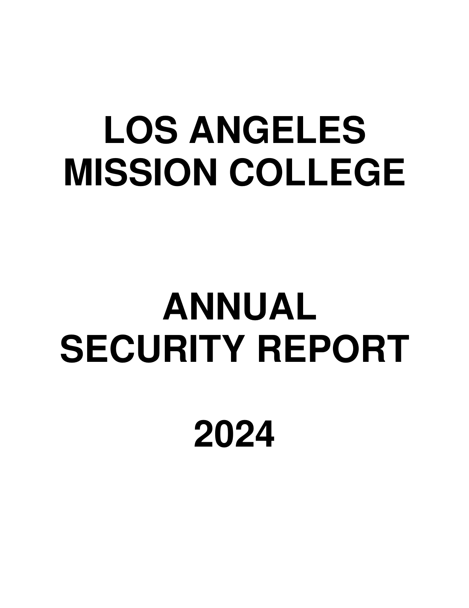
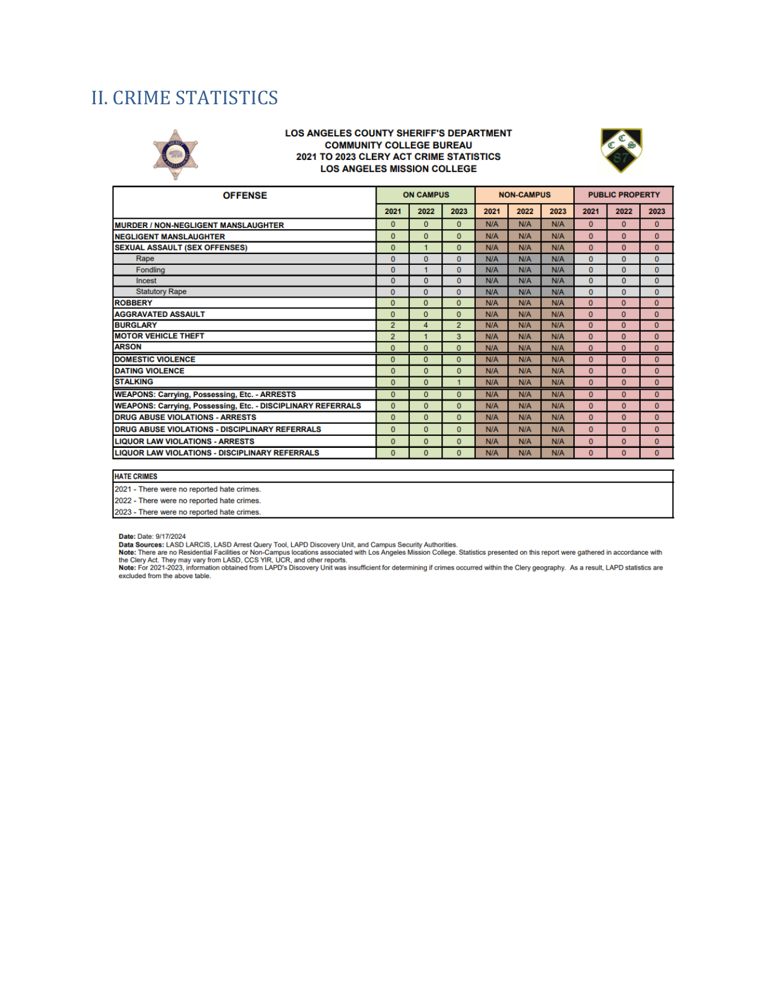
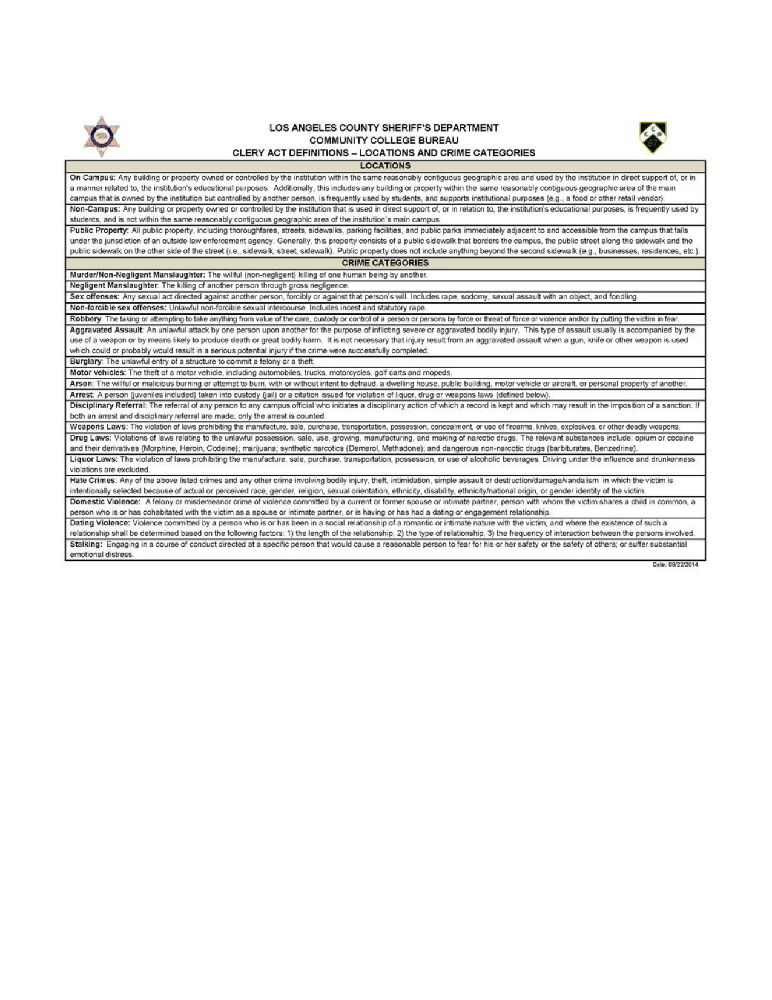
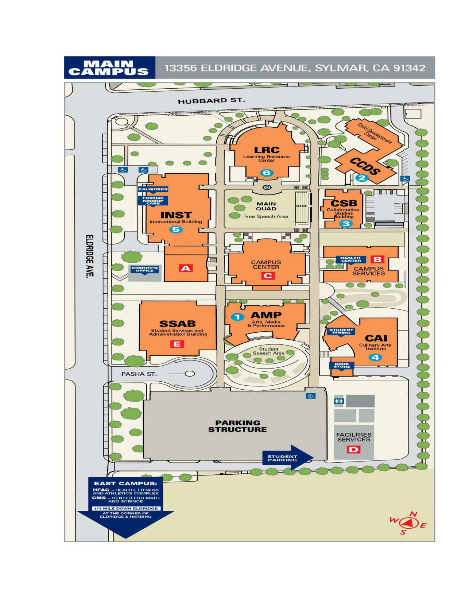
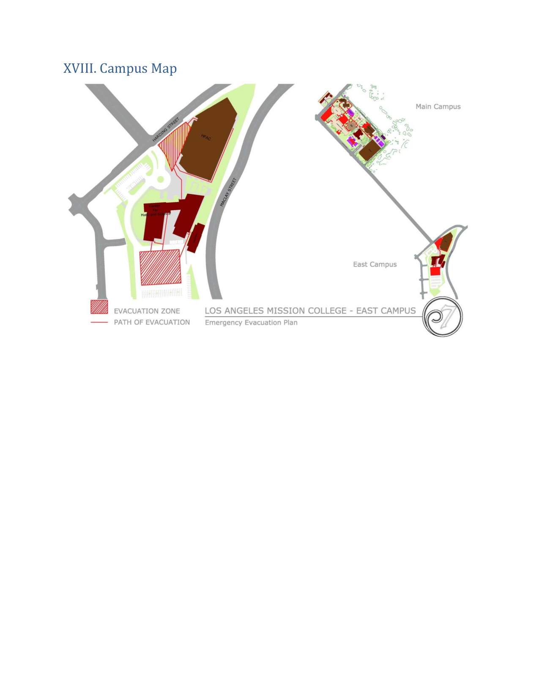
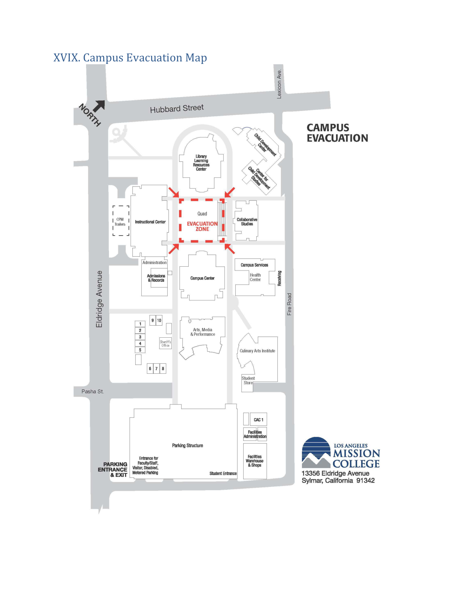

Source Page 1

LOS ANGELES MISSION COLLEGE
ANNUAL SECURITY REPORT
2024
2024 Annual Security Report
This example now includes the full source document. The canonical page keeps every section together, and the companion pages provide smaller ADA-compliant reading views for long-document navigation.

LOS ANGELES MISSION COLLEGE
ANNUAL SECURITY REPORT
2024
President's Message
Los Angeles Mission College is committed to providing a safe environment for students, staff, and visitors on its campus. The College is working diligently to provide trainings and information to students, faculty, and staff and what to do in emergency situations. Our Everbridge Alert System allows us to notify students, faculty, and staff by phone calls and text messages in case of an emergency situation.
The Sheriff's Office is responsible for various aspects of the campus including parking enforcement, building access, public safety, and providing safety escort services to and from buildings and parking lots. Security Officers patrol 24 hours a day, seven days a week to respond to incidents. The Sheriff's Office can be reached at 818-364-7843.
Thank you for your continued support and feedback on how to keep our campus safe.
Dr. Arminda Ornelas, Ph.D. Interim, President
Table of Contents I. PREPARATION of CRIME STATISTICS............................. 4 II. CRIME STATISTICS........................................... 5 III. TIMELY WARNING POLICY..................................... 8 IV. HOW TO REPORT CRIME........................................ 9 V. SECURITY AND ACCESS TO CAMPUS FACILITIES.................... 9 VI. CAMPUS LAW ENFORCEMENT.................................... 10 VII. PROGRAMS REGARDING SECURITY PROCEDURES AND PRACTICES..... 11 VIII. PROGRAMS REGARDING PREVENTION OF CRIMES................. 11 IX. MONITORING OF CRIMINAL ACTIVITIES OFF-CAMPUS.............. 12 X. POLICY REGARDING POSSESSION, USE, AND SALE OF ALCOHOLIC BEVERAGES AND ILLICIT DRUGS................................... 12 XI. DISCLOSURES TO THE ALLEGED VICTIM OF A CRIME OF VIOLENCE OR A NON-FORCIBLE SEX OFFENSE.................................... 13 XII. DATING VIOLENCE, DOMESTIC VIOLENCE, SEXUAL ASSAULT AND STALKING...................................................... 14 XIII. INFORMATION REGARDING SEX OFFENDERS..................... 22 XIV. EMERGENCY RESPONSE AND EVACUATION PROCEDURES............. 22 Emergency Notification Procedures .................................. 22 Testing of Procedures......................................... 23 XV. APPENDIX A. CALIFORNIA DEFINITIONS OF DATING VIOLENCE, DOMESTIC VIOLENCE, SEXUAL ASSAULT, AND STALKING............... 25 XVI. CALIFORNIA DEFINITION OF SEXUAL ASSAULT ................ 30 XVII. CALIFORNIA DEFINITION OF STALKING (Penal Code section 646.9)........................................................ 41 XVIII. Campus Map............................................. 43 XVIX. Campus Evacuation Map................................... 44 XX. College Administration.................................... 45 XXI. LACCD Administration..................................... 45
Source page 4
I. PREPARATION of CRIME STATISTICS
The following crime statistics for Los Angeles Mission College have been compiled by the Los Angeles County Sheriff's Department, in conjunction with local law enforcement agencies surrounding the campus.
Campus crime, arrest and referral statistics include those reported to the Los Angeles County Sheriff's Department, campus security authorities, and local law enforcement agencies. The attached “Clery Act Definitions-Locations and Crime Categories” page includes definitions of “on campus,” “non-campus” and “public property,” and the crime categories required for disclosure under the Clery Act.
Los Angeles Mission College has certain mandatory crime reporting obligations under state law. The Child Abuse Neglect and Reporting Act (“CANRA,” Penal Code section 11164 et seq.) requires employees to report known or suspected instances of child abuse or neglect to law enforcement. Penal Code section 11160 requires prompt, mandatory reporting to law enforcement by health care practitioners (such as employees or contractors in the Student Health Center) when they provide medical services to a person they know or reasonably suspect is suffering from wounds inflicted by a firearm or are the result of assaultive or abusive conduct. Crime analysts from the Los Angeles Sheriff's Department ensure the statistics are placed in the appropriate geographic and crime categories pursuant to the Clery Act.
Source pages 5-7

II. CRIME STATISTICS


Source page 8
III. TIMELY WARNING POLICY
When a crime is reported to the campus Sheriff's personnel or the campus administration that, has occurred within the Clery geography, and in the judgment of the campus administration or Sheriff's Security personnel poses a serious or ongoing threat, a campus-wide “timely warning” will be issued.
The warning will be issued through Los Angeles Mission College's Everbridge Communication System via e-mail, voice mail, text message system, etc. to students, faculty and staff. The Vice President of Administrative Services will be responsible for disseminating the message to students, faculty and staff. In addition, campus Sheriff personnel will print and post the timely warning message on the public bulletin boards located throughout the campus.
Anyone with information warranting a timely warning should contact the Sheriff's Department by phone to 818-364-7843 or in person at the Sheriff's Office at the Campus Sheriff bungalow.
Los Angeles Mission College will publish warnings to the campus community about the following crimes: Criminal homicide - murder and non-negligent manslaughter; Criminal homicide - negligent manslaughter; Sex offenses - forcible and non-forcible sex offenses; Domestic violence, dating violence and stalking; Robbery; Aggravated assault; Burglary; Motor vehicle theft; Arson; Arrests for liquor law violations, drug law violations, and illegal weapons possession; Persons who were not arrested for liquor law violations, drug law violations, and illegal weapons possession, but who were referred for campus disciplinary action for same; Crimes that manifest evidence that the victim was intentionally selected because of the victim's actual or perceived race, gender, religion, sexual orientation, ethnicity, or disability and involve larceny-theft, simple assault, intimidation; destruction/damage/vandalism of property, or any other crime involving bodily injury; Those reported to campus Sheriffs' personnel; and Those that are considered to represent a continuing threat to other students and employees.
In the event that a situation arises, either on or off campus, that, in the judgment of the campus Sheriff's personnel, constitutes an ongoing or continuing threat, a campus wide “timely warning” will be issued. The warning will be issued through the college's website. The information shall be disseminated by the administrative Vice President or his designee in a manner that aids the prevention of similar crimes.
Depending on the particular circumstances of the crime, especially in all situations that could pose an immediate threat to the community and individuals, the campus Sheriff's personnel may post notices. Anyone with information warranting a timely warning should report the circumstances to the campus Sheriff's, by phone 818-364-7843 or in person at the Campus Sheriff Office bungalow
The District shall not be required to provide a timely warning with respect to crimes reported to a pastoral or professional counselor.
Source page 9
If there is an immediate threat to the health or safety of students or employees occurring on campus, the District shall follow its emergency notification procedures.
IV. HOW TO REPORT CRIME
To report a crime, please contact the campus Sheriff's station at 818-364-7843 or use the blue emergency telephones located throughout the campus. To use the emergency phones simply press the button on the front of the phone box to be connected to the Campus Sheriff's Office.
You may also report crime to the following campus officials who are designated as campus security authorities:
Position Name Phone Location President Dr. Armida Ornelas (818) 364-7795 SSAB 321E Vice President, Academic Affairs Dr. Laura Cantu (818) 364-7623 SSAB305D Dean of Institutional Effectiveness Dr. Sarah Master (818) 364-7788 SSAB 305B Dean of Academic Affairs Fabiola Mora (818) 364-7644 LRC 232 Dean of Academic Affairs Dr. Farisa Morales (818) 364-7848 CMS 039 Dean of Academic Affairs Marla Uliana (818) 364-7729 Instructional Building Dean of Academic Affairs Tara Ward-Thompson (818) 364-7804 Instructional Building Dean of Student Services Carlos Gonzalez (818) 364-7778 SSAB, 205J Dean of Student Services Dr. Austin Kemie (818) 364-7842 SSAB, 102B Dean of Student Services Ludi Villegas-Vidal (818) 364-7643 SSAB, 202A
The District does not allow victims or witnesses to report crimes on a voluntary, confidential basis for inclusion in the annual disclosure of crime statistics.
Police reports are considered public records under state law, and reports of crime cannot be held in complete confidence. However, victims of sexual violence may request to law enforcement that their names not become a matter of public record. (Penal Code section 293.) V. SECURITY AND ACCESS TO CAMPUS FACILITIES
No visitor on campus shall attend a college activity limited to college personnel without prior approval of the college president or his/her authorized representative. Any visitor on campus may attend a college event which is authorized as open to the public. (LACCD Board Rule 91202.) All visitors must adhere to the Code of Conduct, LACCD Board Rules, Chapter IX, Article VIII (“Conduct on Campus”), available at: http://www.laccd.edu/Board/Documents/BoardRules/Ch.IX-ArticleVIII.pdf
College premises shall not be used later than 11:00 p.m., except upon special permission of the college. (LACCD Board Rule 7200.32.)
During business hours, the Los Angeles Mission College publicly accessible areas will be open to prospective students, students, parents, employees, authorized contractors, guests and invitees. During non-business hours access to all Los Angeles Mission College facilities is by standard keys or electronic card key, if issued, or by admittance via campus Sheriff's personnel. In the case of periods of extended closure, access will be limited to only those with prior written approval for access to all facilities.
Los Angeles Mission College does not have any campus residences.
Source page 10
Los Angeles Mission College addresses security considerations in maintaining campus facilities in the following ways:
Los Angeles Mission College employs the Los Angeles County Sheriff's Department on a full-time basis, to provide law enforcement support and emergency response to the campus. The campus maintains its premises and security by continues patrol by the Campus Sheriff. All facilities are secured through locking mechanisms which are either hard key enabled or card key enabled. The campus has established a policy which identifies those individuals who are authorized to be issued hard keys and also established the access allowed by key card entry. Access identification is authorized on a “needed access” basis as submitted by a Department Chair, Dean or Vice Presidents and approved by the Vice President of Administrative Services or College President. All facilities are secured during non-business hours and access after business hours is authorized on an approved basis or through the Campus Sheriff. Los Angeles Mission College security is assisted with a video camera system which records activity in the vicinity of the cameras. The camera system is managed by the Campus Sheriff.
VI. CAMPUS LAW ENFORCEMENT
Authority of the Los Angeles County Sheriff's Department
Los Angeles Mission College, through the Los Angeles Community College District, contracts with the Los Angeles County Sheriff's Department to provide security services at Los Angeles Mission College. The Sheriff's Department has authority to apprehend and arrest individuals involved in illegal activity on campus and areas immediately adjacent to the campus. The Sheriff's Deputies are peace officers as defined in Penal Code section 830.1. The Sheriff's Security Officers are public officers as defined in Penal Code section 831.4, and have received training pursuant to Penal Code section 832.
Crimes occurring on campus are investigated by the Sheriff's Department. The prosecution of criminal offenses, both felonies and misdemeanors, occurs at the Los Angeles Superior Court (for violations of state law) or the United States District Court, Central District of California (for violations of federal law). Sheriff's Department personnel work as appropriate with local, state and federal law enforcement agencies, and have access to national crime databases.
The Sheriff's Department maintains a daily crime log of criminal incidents and alleged criminal incidents which are reported to the Sheriff's Department.
Accurate and Prompt Reporting of Crimes to Law Enforcement
To ensure the safety of everyone on campus, Los Angeles Mission College encourages the accurate and prompt reporting of crimes to Campus Sheriff's personnel at 818-364-7843 at the Sheriff's Office bungalow.
Professional Counselors
A professional counselor whose official responsibilities include mental health counseling to members of the Los Angeles Mission College community and who is functioning within the scope of his/her license or certification is exempt from disclosing reported offenses to law enforcement, unless there is a legal obligation to disclose. Personal information from counseling records will not be revealed unless disclosure is required by law. (LACCD Board Rule 8302.10.) However, counselors may encourage victims to make a report to law enforcement.
Source page 11
VII. PROGRAMS REGARDING SECURITY PROCEDURES AND PRACTICES
Los Angeles Mission College maintains a 24/7 security and safety presence on the campus which is supported by enhanced security features such as cameras and controlled access systems managed by the Campus Sheriff. The Campus Sheriff proactively patrols the campus and engages individuals involved in suspicious or criminal activity. The Campus Sheriff assists campus residents and visitors with safety information and directions to locations and events. In addition to patrol and prevention the Campus Sheriff also educates the campus on personal crime prevention and safety. In addition to the Campus Sheriff the campus relies on the Los Angeles Police Department, Mission Division for additional response and support as needed. Emergency services for fire and first aid response are generally provided by the Los Angeles City Fire Department.
VIII. PROGRAMS REGARDING PREVENTION OF CRIMES
The Campus Sheriff maintains a webpage on the campus web site providing safety and security information as well as information about crimes, crime reporting and general personal safety. The Campus Sheriff has a list of safety tips for students and parents that will help prevent problems on campus. Those safety tips are:
Los Angeles Mission College has a “panic phone” system located in and around campus. Know where these are. Have a safety buddy, someone you can call for a ride or for help, and create a code word or phrase that means “Come help me out of this” or “I'm in trouble.” If you are on campus at night and feel uncomfortable walking to your car or the bus station, please call the Campus Sheriff Office at (818) 364-7843 and ask for the escort service to give you a ride to your campus destination. If you are walking to your vehicle alone (day or night) make sure you have your keys ready when you get to the car. These will prevent a long delay in getting into the car and locking the doors for safety. Always be aware of your surroundings and any suspicious activity in your area. If you are concerned call the Campus Sheriff at (818) 364-7843 or use an Emergency Call Box. Before going to a party, tell a friend where you're going and when you'll be back. Let them know if your plans change. Take turns being a designated driver or sober companion. You could save someone's life. If a party gets out of hand, leave! Never, ever leave your drink alone or with someone you don't know. Date rape drugs are easy to use. And men are just as vulnerable as women. Don't take drinks or anything else from strangers, even food. Don't ride with drunk or drugged drivers. Don't offer rides to people you don't know. Trust your instincts!
And here's what parents can do: Ask the college administrators about campus alcohol policies. Talk to your kids about the legal penalties for underage drinking. Discuss the possible consequences of drinking, including date rape, violence and school interference. Know your child's roommate and living arrangements. Call your son or daughter frequently.
Source page 12
The Campus Sheriff provides free safety escort service during operating hours to transport students to their cars or bus stops on the campus periphery. Anyone may report a crime or other suspicious activity anonymously at Los Angeles County Sheriff Station Tip Hotline by calling (323) 778-5678.
IX. MONITORING OF CRIMINAL ACTIVITIES OFF-CAMPUS
Los Angeles Mission College does not have recognized off-campus locations of student organizations, such as off-campus housing facilities, and does not engage in monitoring of student criminal activity off- campus. However, students engaging in criminal activities off-campus, in conjunction with college- sponsored activities, may be subject to disciplinary action by Los Angeles Mission College. X. POLICY REGARDING POSSESSION, USE, AND SALE OF ALCOHOLIC BEVERAGES AND ILLICIT DRUGS
The LACCD is committed to drug-free and alcohol-free campuses. Students and employees are prohibited from unlawfully possessing, using or distributing illicit drugs and alcohol on District premises, in District vehicles, or as part of any activity of the District or Los Angeles Mission Colleges of the District.
LACCD Board Rule 9803.19 prohibits the following: “Alcohol and Drugs. Any possession of controlled substances which would constitute a violation of Health and Safety Code section 11350 or Business and Professions Code section 4230, any use of controlled substances the possession of which are prohibited by the same, or any possession or use of alcoholic beverages while on any property owned or used by the District or colleges of the District or while participating in any District or college-sponsored function or field trip. "Controlled substances," as used in this section, include but are not limited to the following drugs and narcotics: (a) opiates, opium and opium derivatives; (b) mescaline; (c) hallucinogenic substances; (d) peyote; (e) marijuana; (f) stimulants and depressants; (g) cocaine.”
In addition to Board Rule 9803.19, the LACCD also enforces state laws relating to underage drinking, pursuant to Board Rule 9803.27 (“Performance of an Illegal Act”).
Penalties
Federal and state laws regarding alcohol and illicit drugs allow for fines and/or imprisonment. Other legal problems include the loss of one's driver's license and limitations of career choices. A summary of federal penalties for drug related offenses is available at: https://www.justice.gov/criminal/ndds
The federal Controlled Substances Act is available at: http://www.deadiversion.usdoj.gov/21cfr/21usc/index.html
In addition to criminal prosecution, violators are also subject to disciplinary action by Los Angeles Mission College. Student discipline actions may include the following: warning, reprimand, disciplinary probation, suspension, and/or expulsion. Employee discipline actions may include the following: warning, letter of reprimand, notice of unsatisfactory service, suspension, demotion, and/or dismissal.
Health Risks
Health risks associated with the abuse of controlled substances include malnutrition, damage to various organs, hangovers, blackouts, general fatigue, impaired learning, dependency, disability and death. Both drugs and alcohol may be damaging to the development of an unborn fetus. Personal problems include diminished self-esteem, depression, alienation from reality, and suicide. Social problems include alienation from and abuse of family members, chronic conflict with authority, and loss of friends, academic
Source page 13
standing, and/or co- and extra-curricular opportunities. A description of various drugs and their effects is available at:
http://www.justice.gov/dea/druginfo/factsheets.shtml
Drug and Alcohol Prevention Programs
Los Angeles Mission College uses referral services for Drug and Alcohol prevention and treatment programs. Please refer to the Los Angeles Mission College Student Health webpage on the Los Angeles Mission College website.
Resources for Counseling, Treatment and Rehabilitation
The following counseling, treatment, and rehabilitation resources are available for the treatment of alcohol and drug dependence and abuse.
Los Angeles Community College District Employee Assistance Program (EAP) http://www.laccd.edu/Departments/HumanResources/Total-Wellness-Program/Pages/HR-ARFLbenefits.aspx (800) 327-0449
Los Angeles County Public Health, Substance Abuse Prevention and Control http://publichealth.lacounty.gov/sapc/ (800) 564-6600
Alcoholics Anonymous www.aa.org (800) 923-8722
Cocaine Anonymous https://ca.org/ (888) 714-8341
Marijuana Anonymous https://www.marijuana-anonymous.org/ (800) 766-6779
Narcotics Anonymous https://www.na.org/ (800) 863-2962
Families Anonymous www.familiesanonymous.org (800) 736-9805
XI. DISCLOSURES TO THE ALLEGED VICTIM OF A CRIME OF VIOLENCE OR A NON-FORCIBLE SEX OFFENSE
Los Angeles Mission College will, upon written request, disclose to the alleged victim of a crime of violence, or a non-forcible sex offense, the report of the results of any disciplinary proceeding conducted by Los Angeles Mission College against a student who is the alleged perpetrator of such crime or offense.
Source pages 14-21
If the alleged victim is deceased as a result of such crime or offense, the next of kin of such victim shall be treated as the alleged victim for purposes of the request.
As defined by Section 16 of Title 18 of the United States Code, a “crime of violence” is “(a) an offense that has an element the use, attempted use, or threatened use of physical force against the person or property of another, or (b) any other offense that is a felony and that, by its nature, involves a substantial risk that physical force against the person or property of another may be used in the course of committing the offense.”
XII. DATING VIOLENCE, DOMESTIC VIOLENCE, SEXUAL ASSAULT AND STALKING
Allegations of dating violence, domestic violence, and stalking are handled pursuant to the LACCD Board Rules, Chapter XV (“Prohibited Discrimination, Unlawful Harassment, and Sexual Misconduct (Title IX”) and LACCD Administrative Regulation C-14 (“Procedures for Prohibited Discrimination, Unlawful Harassment, and Sexual Misconduct Complaints”), available at:
http://www.laccd.edu/Board/Documents/BoardRules/Chapter%20XV.docx http://www.laccd.edu/About/Documents/AdministrativeRegulations/C-14.docx
Educational Programs and Campaigns to Promote the Awareness of Dating Violence, Domestic Violence, Sexual Assault and Stalking
Los Angeles Mission College provides the following primary prevention and awareness programs to promote the awareness of dating violence, domestic violence, sexual assault and stalking for all incoming students and new employees:
The District prohibits dating violence, domestic violence, sexual assault, and stalking. These terms are defined by the Clery Act as follows:
Dating violence: Violence committed by a person who is or has been in a social relationship of a romantic or intimate nature with the victim. (i) The existence of such a relationship shall be determined based on the reporting party's statement and with consideration of the length of the relationship, the type of relationship, and the frequency of interaction between the persons involved in the relationship. (ii) For purposes of this definition-(A) Dating violence includes, but is not limited to, sexual or physical abuse or the threat of such abuse. (B) Dating violence does not include acts covered under the definition of domestic violence. (34 C.F.R. § 668.46.)
Domestic violence: (i) A felony or misdemeanor crime of violence committed-(A) By a current or former spouse or intimate partner of the victim; (B) By a person with whom the victim shares a child in common; (C) By a person who is cohabitating with, or has cohabitated with, the victim as a spouse or intimate partner; (D) By a person similarly situated to a spouse of the victim under the domestic or family laws of the jurisdiction in which the crime of violence occurred; or (E) By any other person against an adult or youth victim who is protected from that person's acts under the domestic or family violence laws of the jurisdiction in which the crime of violence occurred. (34 C.F.R. § 668.46.)
Sexual assault: An offense that meets the definition of rape, fondling, incest, or statutory rape as used in the FBI's Uniform Crime Reporting (“UCR”) program (see below).
o Rape: The penetration, no matter how slight, of the vagina or anus with any body part or object, or oral penetration by a sex organ of another person, without the consent of the victim.
o Sex Offenses: Any sexual act directed against another person, without the consent of the victim, including instances where the victim is incapable of giving consent.
▪ A. Fondling --The touching of the private body parts of another person for the purpose of sexual gratification, without the consent of the victim, including instances where the victim is incapable of giving consent because of his/her age or because of his/her temporary or permanent mental incapacity. ▪ B. Incest --Sexual intercourse between persons who are related to each other within the degrees wherein marriage is prohibited by law. ▪ C. Statutory Rape --Sexual intercourse with a person who is under the statutory age of consent. (34 C.F.R. § 668.46, Appendix A.)
Stalking: (i) Engaging in a course of conduct directed at a specific person that cause a reasonable person to-(A) Fear for the person's safety or the safety of others; or (B) Suffer substantial emotional distress. (ii) For the purposes of this definition-(A) Course of conduct means two or more acts, including, but not limited to, acts in which the stalker directly, indirectly, or through third parties, by any action, method, device, or means, follows, monitors, observes, surveils, threatens, or communicates to or about a person, or interferes with a person's property. (B) Reasonable person means a reasonable person under similar circumstances and with similar identities to the victim. (C) Substantial emotional distress means significant mental suffering or anguish that may, but does not necessarily, require medical or other professional treatment or counseling. (34 C.F.R. § 668.46.)
Violations of the LACCD's Prohibited Discrimination, Unlawful Harassment, and Sexual Misconduct Policy may also be criminal offenses under California law. The definitions of dating violence, domestic violence, sexual assault, and stalking under the California Penal Code are included in Appendix A at the end of this report.
The LACCD's Prohibited Discrimination, Unlawful Harassment, and Sexual Misconduct Policy uses the following definitions:
“Dating Violence” is included in Intimate Partner Violence, below. (C-14, Section II.I.)
“Domestic Violence” is included in Intimate Partner Violence, below. (C-14, Section II.M.)
The term “Intimate Partner” refers to a person with whom one has or had a close personal relationship that may be characterized by some or all of the following: the partners' emotional connectedness, regular contact, ongoing physical contact and sexual behavior, identity as a couple, and familiarity with and knowledge about each other's lives. Intimate Partner relationships include current or former:
spouses (married spouses, common-law spouses, civil union spouses, domestic partners) boyfriends/girlfriends dating partners ongoing sexual partners
Intimate Partners may or may not cohabit. Intimate Partners can be opposite or same sex. If the Alleged Victim and the Respondent have a child in common and a previous relationship but no current relationship, then by definition they fit into the category of former Intimate Partners. (C-14, Section II.R.)
“Intimate Partner Violence” refers to behavior involving physical force or intimidation of such force, intended to hurt, damage, or kill an Intimate Partner, as defined above; this frequently arises in the form of Sexual Misconduct. (C-14, Section II.S.)
“Sexual Misconduct” refers to non-consensual sexual activity, where clear, knowing, and voluntary Consent, as defined herein, both prior to and during the sexual activity is absent. Sexual misconduct includes “sexual harassment” as that term is defined herein.
1. Sexual Misconduct offenses include but are not limited to Non-Consensual Sexual Intercourse, defined as
a. Any sexual penetration or intercourse (anal, oral, or vaginal) b. However slight c. With any object d. By a person upon another person e. That is without Consent and/or by force f. Sexual penetration includes vaginal, oral or anal penetration by a penis, tongue, finger or object, or oral copulation by mouth or genital contact, or genital to mouth contact. g. Non-Consensual Sexual Intercourse includes but is not limited to rape, forced sodomy, forced copulation, or rape by foreign object.
2. Sexual Misconduct offenses also include Non-Consensual Sexual Contact, defined as
a. Any intentional sexual touching b. However slight c. With any object d. By another person upon another person e. That is without Consent and/or by force. f. Sexual touching includes any bodily contact with the breasts, groin, genitals, mouth or other bodily orifice of another individual, or any other bodily contract in a sexual manner. g. Non-Consensual Sexual Intercourse includes but is not limited to sexual battery or threat of sexual assault.
3. In addition to those acts specified above, Sexual Misconduct also specifically includes Sexual Harassment, Stalking, Dating Violence, Domestic Violence, and Intimate Partner Violence. (C-14, Section II.DD.)
“Sexual Violence” refers to a forceful physical sexual act that is committed or attempted by another person without freely given Consent. (C-14, Section II.GG.)
“Consent” when used regarding Sexual Misconduct matters refers to a mutual honest, direct agreement. Consent is never implied and cannot be assumed, even in the context of a relationship.
1. Consent must be: a. Informed (knowing) b. Voluntary (freely given) c. Active, (not passive) d. By clear words or actions, with regard to agreed-upon (sexual) activity, and e. Must indicate permission to engage in mutually agreed upon (sexual) activity. f. It must also be continuous throughout the sexual interaction.
2. Consent cannot be the result of: a. Force, b. Physical Violence,
c. Threats, d. Intimidation, e. Coercion, including consideration of frequency, intensity, isolation and duration, or f. Incapacity as a result of drugs, alcohol, sleep, mental or cognitive impairment, injury, or other condition, which was or should have been known to the accused. Intoxication of the assailant shall not diminish the assailant's responsibility for sexual assault or sexual misconduct.
3. The absence of “No” does not mean ‘Yes”. (C-14, Section II.H.)
“Stalking” refers to a course of conduct (two or more acts), directed at a specific person, on the basis of actual or perceived membership in a protected class that is unwelcome, and would cause a reasonable person to fear for his or her safety or the safety of others, or to suffer substantial emotional distress. Stalking is defined as the repeated following, watching, and harassing of another person. Stalking may include legal, appropriate behavior such as sending someone flowers or waiting outside someone's workplace for her/him to appear. However, when these acts are coupled with an intent to instill fear or injury, they may be part of a pattern of stalking behavior. (C-14, Section II.HH.)
Some safe and positive options for bystander intervention include the following:
1. Distraction - Create a distraction to change the situation/focus. You might consider making a joke or saying a funny comment to take the attention away from the individual. This will give people who are feeling uncomfortable, the opportunity to leave.
2. Direct - You can be direct and call out the harmful behavior or ask a targeted individual if they are ok or need help. This approach will hopefully stop the behavior and allow the impacted individual to leave. 3. Delegate - Ask others for help. This can involve asking friends to assist or calling law enforcement personnel. Refer people to on- or off-campus resources for support in health, counseling, or with legal assistance.
Los Angeles Mission College provides the following information regarding risk reduction:
A common theme of awareness and crime prevention programs is to
encourage students and employees to be aware of their responsibility for their
own security and the security of others.
Los Angeles Mission College provides the following ongoing prevention and awareness campaigns for all current students and employees: Periodically during the academic year, the Campus Sheriff presents crime prevention
awareness sessions on sexual assault (rape and acquaintance rape), Rohypnol
abuse, theft and vandalism, as well as education sessions on personal safety.
Additionally, this information is available on the college website under the Campus
Sheriff webpage.
Procedures Victims Should Follow in Cases of Alleged Dating Violence, Domestic Violence, Sexual Assault or Stalking
LACCD strongly encourages the timely reporting of crimes of alleged dating violence, domestic violence, sexual assault or stalking, so that evidence may be collected and preserved. It is important to preserve evidence that may assist in proving the alleged criminal offense occurred or may be helpful in obtaining a protection order.
If you are a victim of dating violence, domestic violence, sexual assault, or stalking, you should contact the LACCD Title IX Coordinator, Natalie Mason Kinsey at (213) 891-2315 and/or the LACCD deputy title IX coordinators, Cody Hunt at (213)891-2054 or Kyra Nielson at (213) 891- 2393.
The Title IX Coordinator will inform the victim of his/her options to report the matter to either campus law enforcement or the local police department; be assisted by campus authorities in notifying law enforcement if the victim chooses; and decline to notify such authorities. (See C-14, Section X.) The Sheriff's Department on campus may be contacted at: 818-364-7843.
The Title IX Coordinator will also inform the victim of legal and disciplinary options, including criminal prosecutions, civil action, and relevant District disciplinary processes. (C-14, Section X.A.)
A victim is entitled to pursue independently civil remedies, including but not limited to injunctions, restraining orders, or other orders. (C-14, Section XV.) Information regarding domestic violence retraining orders is also available at: http://www.courts.ca.gov/selfhelp-domesticviolence.htm
The District may also seek a temporary restraining order on behalf of an employee, if the employee has suffered unlawful violence or a credible threat of violence from any individual that can reasonably be construed to be carried out at the workplace. (Code of Civil Procedure section 527.8.)
Confidentiality of Victims and Other Necessary Parties
All persons involved in investigations of complaints shall have a duty to maintain the confidentiality of matters discussed, except as may be required or permitted by law, including the rules and regulations of the District. (C-14, Section VI.) The Title IX Coordinator will inform law enforcement of an incident for Clery Act reporting purposes, without providing any personally identifying information (e.g., name) of the victim. (C-14, Section IV.B.)
Los Angeles Mission College will maintain as confidential any accommodation or protective measures provided to the victim, to the extent that maintaining such confidentiality would not impair the ability of the institution to provide the accommodations or protective measures.
Counseling, Health, Mental Health, Victim Advocacy, Legal Assistance, Visa and Immigration Assistance, Student Financial Aid and Other Services Available for Victims
Los Angeles Mission College will provide written notification to students and employees about existing counseling, health, mental health, victim advocacy, legal assistance, visa and immigration assistance, student financial aid, and other services available to victims, both within Los Angeles Mission College and in the community.
Requesting Changes to Academic, Transportation, and Working Situations or Protective Measures
Los Angeles Mission College will provide a victim written notification to victims about options for, available assistance in, and how to request changes to academic, living, transportation, and working situations or protective measures.
Los Angeles Mission College will comply with a victim's request for an academic situation change following an alleged offense, if such changes are reasonably available, and regardless of whether the victim chooses to report the crime to campus law enforcement. For example, Los Angeles Mission College may, consistent with Board policy, provide the option of taking a “withdrawal” or an “incomplete” grade.
The College President or his/her designee shall refer an Alleged Victim to the Title IX Coordinator if he/she experiences academic difficulties as a result of the sexual assault. The Title IX Coordinator, in cooperation with the Vice President of Academic Affairs and/or Student Services may provide temporary sanctions to alleviate the immediate impact of the sexual assault. The President shall also refer a non-student Reporting Individual to the Title IX Coordinator for assistance with workplace or immediate difficulties that may arise. (C-14, Section IX.A.)
Temporary sanctions shall be implemented by the Title IX Coordinator, as required to separate the Alleged Victim and Respondent. Such temporary sanctions may include moving one party to another section of the same class or to a different online location, providing the Alleged Victim with an escort across campus, or permitting the Alleged Victim to take exams in a different location from the Respondent and/or alleged offender and any similar action(s) intended to separate the parties and reduce the stress on them arising from the incident and allegations. (C- 14, Section X.D.)
Procedures for Disciplinary Action for Cases of Alleged Dating Violence, Domestic Violence, Sexual Assault or Stalking
Complaints regarding dating violence, domestic violence, sexual assault or stalking at Los Angeles Mission College should be directed to the Title IX Coordinator; such complaints are investigated by the District's Office for Diversity, Equity and Inclusion.
A Compliance Officer shall complete an investigation and make a written report to the College President in 60 days. (C-14, Section XI.A.) The College President shall send a summary of the Compliance Officer's report to the parties, and the Alleged Victim and Respondent have a right to make an oral statement to the College President within 15 days of receipt of the summary of the report. (C-14, Section XI.B.)
The College President shall send a Written Decision to the parties. The Alleged Victim or Respondent may appeal within 15 days of the date of the Written Decision. The District's Board of Trustees may review the matter and act within 45 days; if 45 days have elapsed without action by the Board of Trustees, the Written Decision is considered the final District decision. In cases not involving employment, there is also a right to file a written appeal to the State Chancellor within 30 days after the final District decision is issued by the Board of Trustees, or the 45-day period has elapsed. (C-14, Section XII.B.)
If discipline is to be taken, the College President or his/her designee shall initiate the applicable disciplinary process within ten (10) business days of issuing the Written Decision, or, for good cause, as soon thereafter as is practical. (C-14, Section XIII.B.)
Disciplinary Action for Students
Complaints involving dating violence, domestic violence, sexual assault, and stalking perpetrated by a student may be filed with the Title IX Coordinator. After the investigation by the Office for Diversity, Equity and Inclusion, and subsequent Written Decision by the College President, Los Angeles Mission College may initiate student discipline consistent with the procedures for campus disciplinary actions in LACCD Board Rules, Chapter IX, Article XI (“Student Discipline”), available in its entirety at:
http://www.laccd.edu/Board/Documents/BoardRules/Ch.IX-ArticleXI.pdf
The Chief Student Services Officer or designee initiates student discipline appropriate to the misconduct, by sending a Notice of Charges and proposed disciplinary action. (Board Rule 91101.12.) Pending the conclusion of the disciplinary process, the Chief Student Services Officer or designee may also immediately suspend a student from all District locations in emergency situations to protect lives or property and/or to ensure the maintenance of order. (Board Rule 91101.11.)
For proposed suspensions less than 10 days, the accused may a request a hearing before the Chief Student Services Officer or designee. The hearing before the Chief Student Services Officer or designee is scheduled within ten (10) days of the request. The Chief Student Services Officer or designee provides written notice of his/her decision within five (5) days of the hearing, and that decision is final. (Board Rule 91101.13.)
For proposed suspensions greater than 10 days or expulsions, the accused may request a hearing before a disciplinary hearing committee. The hearing before the committee is scheduled within ten (10) days of the request. The hearing committee issues its recommendation to the College President within five (5) days of the hearing. (Board Rule 91101.14.)
Within ten (10) days after receipt of the committee's recommendation, the College President issues his/her decision. If the College President's decision is to suspend a student, the decision is final. (Board Rule 91101.15.) If the College President's decision is to recommend expulsion to the District's Board of Trustees, the accused may submit an appeal of the College President's recommendation within five (5) days. (Board Rules 91101.15, 91101.16.) The College President's recommendation (and the appeal, if any) shall be immediately transmitted to the Chancellor. If the Chancellor does not accept the President's recommendation for expulsion, the matter is returned to the college for further action. If the Chancellor accepts the President's recommendation for expulsion, the expulsion matter is scheduled for consideration for the Board of Trustees at any regularly scheduled meeting held within 30 days of the Chancellor's receipt of the recommendation. The Board of Trustees may confirm, modify, remand, or reject the Chancellor's recommendation, but the Board's action is final. (Board Rule 91101.17.)
Disciplinary Action for Employees
If the alleged perpetrator is a District employee, disciplinary action shall be pursued in accordance with state law, the LACCD Board Rules, the LACCD Personnel Commission, and/or any applicable collective bargaining agreement or memoranda of understanding. (C-14, Section XIII.C.)
Standard of Evidence Used
The LACCD uses a “preponderance of evidence” standard. (C-14, Section XII.B.)
Possible Sanctions Following a Disciplinary Proceeding for an Allegation of Dating Violence, Domestic Violence, Sexual Assault or Stalking
Possible sanctions following a student disciplinary hearing include warnings, probation, suspension or expulsion from all of the District's colleges. (C-14, Section XIII.D.)
Disciplinary action against employees shall include verbal warnings, letters of reprimand, notices of unsatisfactory service, suspensions, demotions, or dismissals. (C-14, Section XIII.C.)
Range of Protective Measures That May Be Offered to Victims Following an Allegation of Dating Violence, Domestic Violence, Sexual Assault or Stalking
Temporary sanctions shall be implemented by the Title IX Coordinator, as required to separate the Alleged Victim and Respondent. Such temporary sanctions may include moving one party to another section of the same class or to a different online location, providing the Alleged Victim with an escort across campus, or permitting the Alleged Victim to take exams in a different location from the Respondent and/or alleged offender and any similar action(s) intended to separate the parties and reduce the stress on them arising from the incident and allegations. (C-14, Section X.D.)
A Prompt, Fair, and Impartial Process
Proceedings arising from an allegation of dating violence, domestic violence, sexual assault or stalking will include a prompt, fair, and impartial process from the initial investigation to the final result.
Proceedings will be conducted by officials who, at a minimum, receive annual training on the issues related to dating violence, domestic violence, sexual assault, and stalking and how to conduct an investigation and hearing process that protects the safety of victims and promotes accountability. The Title IX Coordinator is responsible for organizing training opportunities for administrators and other employees regarding Title IX sexual misconduct issues. (C-14, Sections IV.A, IV.B.)
The accused and accuser may have others present during a campus disciplinary hearing.
In cases of domestic violence, dating violence, sexual assault and/or stalking, all parties (Respondent and Alleged Victim) must receive the same notifications, mailed at the same time, regarding all steps of the disciplinary process. They must all be given equivalent rights to be heard and access to an Advocate. All parties must be notified that disciplinary action is being taken, with specific details sufficient to ameliorate concerns of the person who was the object of the violations, subject to legal and District limitations related to the privacy of the parties. (C-14, Section XIII.B.) (An “Advocate” is someone trained by a Title IX coordinator, and an Advocate's assistance can include providing moral support as well as information regarding procedural issues, throughout the pendency of an investigation, through the last internal appeal. (C-14, Section II.A.)
When a student or employee reports to Los Angeles Mission College that he/she has been a victim of dating violence, domestic violence, sexual assault or stalking, whether the offense occurred on or off campus, Los Angeles Mission College will provide the student or employee a written explanation of the student's or employee's rights and options.
Source page 22
XIII. INFORMATION REGARDING SEX OFFENDERS
Registered sex offenders must register with campus law enforcement within five working days of commencing enrollment or employment at Los Angeles Mission College. (Penal Code section 290.)
Information regarding registered sex offenders may be obtained at the California Department of Justice, Office of Attorney General's “Megan's Law” website, at: http://www.meganslaw.ca.gov/
If you are doing a search on the Megan's Law site for sex offenders residing in the local area, Los Angeles Mission College's zip code is 91342. XIV. EMERGENCY RESPONSE AND EVACUATION PROCEDURES
Upon receiving report of an emergency event occurring on college property, the campus Sheriff will investigate to confirm an emergency exists. Los Angeles Mission College will issue a timely warning or emergency alert to the campus community upon confirmation of a significant emergency or dangerous situation presenting an immediate and ongoing threat to the health and safety of students and employees on the campus.
To report an emergency, please contact the Campus Sheriff's Office at 818-364-7843 or use one of the blue emergency phones throughout the campus.
Emergency Notification Procedures
The LACCD SAFETY ALERT system is the most comprehensive emergency communication tool available 24 hours a day and is hosted via an external web- based mass notification server. The primary goal of the LACCD SAFETY ALERT emergency notification system is to disseminate time sensitive developments to students and employees of the Los Angeles Community College District assigned to the affected college campus during an emergency incident.
During an emergency incident, initiation of an emergency notification can begin through the college presidents, Vice Presidents, Public Relations Manager, Director of Facilities, and Sheriff Team Leader (i.e. system operators) who may utilize LACCD SAFETY ALERT to send a pre- scripted message or unscripted message describing the incident and/ or action steps students and employees should take to ensure personal safety. Pre-scripted messaging content was developed by the District Safety and Security Services Team.
The message will be sent to District employees and students via: Employee email Student email Text message Mobile application (Everbridge App) Nixle Personal email Cell phone call
Source pages 23-24
Faculty, staff, and actively enrolled students are automatically opted into the LACCD Alert emergency notification system through LACCD email and personal contact information voluntarily disclosed to the college (or District) via Student Information System (SIS) and SAP (employee portal).
Personnel working on campus who are not an LACCD employee or student (Example: contractors, construction personnel, CDC emergency contacts, high school personnel on an LACCD campus) may enroll a mobile device into the LACCD Alert emergency notification system.
How to subscribe: From a mobile device, text 888777 and enter the appropriate campus keyword. Opting out: Your mobile device will automatically opt-out of the LACCD Alert system after a three (3) month period. You will receive an automatic text reminder to renew.
CAMPUS MOBILE KEYWORDS: LACC: CUBS; ELAC: HUSKIES; LAHC: SEAHAWKS; LASC: COUGARS; LAMC: EAGLES1; LAPC: BRAHMAS; LATTC: BEAVERS; LAVC: MONARCHS; WLAC: WILDCAT
Los Angeles Mission College will, without delay, and considering the safety of the community, determine the content of the notification and initiate the notification system, unless issuing a notification will, in the professional judgment of the responsible authorities, compromise efforts to assist a victim or to contain, respond, or otherwise mitigate the emergency.
The entire campus community will be notified when a potential threat will likely impact a large segment of Los Angeles Mission College. Campus Sheriff's personnel and the administrative Vice President will reassess the situation to determine whether additional notifications or updates need to be made.
Communications checklist:
o Everbridge - An email alert will be sent to all users. Phone calls and text messages are also sent, but delivery requires signup on an individual basis. An email reminding students, faculty, and staff to opt-in to the phone/text delivery will be sent at the beginning of each semester. o Website Message - An emergency message will be displayed at the top every page of the college website, for the duration of the emergency. Testing of Procedures
District Safety and Security Services provides each LACCD Alert system operator with a monthly log-in exercise for proficiency maintenance. A quarterly districtwide test is administered to ensure the system is working as designed and to ensure the campus community is familiar with how emergency alerts may be received.
Los Angeles Mission College conducts unannounced tests of its emergency response and evacuation procedures which are self-monitored and evaluated with the Sheriff's Department.
Los Angeles Mission College publicizes its emergency response and evacuation procedures, in conjunction with at least one test per calendar year. Emergency response and evacuation procedures are publicized by:
1. Posting emergency procedures in each classroom, 2. Providing emergency information in the College Catalog, 3. Providing other emergency notifications through Everbridge.
Los Angeles Mission College will document each test by recording a description of the test, the date the test was held, the time the test started and ended, and whether the test was announced or unannounced. Copies of test documentation are available from Administrative Services.
Source pages 25-29
XV. APPENDIX A. CALIFORNIA DEFINITIONS OF DATING VIOLENCE, DOMESTIC VIOLENCE, SEXUAL ASSAULT, AND STALKING
CALIFORNIA DEFINITION OF DATING VIOLENCE AND DOMESTIC VIOLENCE (Penal Code section 243(e) (1); Penal Code section 273.5)
§ 243. Punishment for battery generally; Punishment for battery against specified officers or others
(a) A battery is punishable by a fine not exceeding two thousand dollars ($2,000), or by imprisonment in a county jail not exceeding six months, or by both that fine and imprisonment.
(b) When a battery is committed against the person of a peace officer, custodial officer, firefighter, emergency medical technician, lifeguard, security officer, custody assistant, process server, traffic officer, code enforcement officer, animal control officer, or search and rescue member engaged in the performance of his or her duties, whether on or off duty, including when the peace officer is in a police uniform and is concurrently performing the duties required of him or her as a peace officer while also employed in a private capacity as a part-time or casual private security guard or patrolman, or a nonsworn employee of a probation department engaged in the performance of his or her duties, whether on or off duty, or a physician or nurse engaged in rendering emergency medical care outside a hospital, clinic, or other health care facility, and the person committing the offense knows or reasonably should know that the victim is a peace officer, custodial officer, firefighter, emergency medical technician, lifeguard, security officer, custody assistant, process server, traffic officer, code enforcement officer, animal control officer, or search and rescue member engaged in the performance of his or her duties, nonsworn employee of a probation department, or a physician or nurse engaged in rendering emergency medical care, the battery is punishable by a fine not exceeding two thousand dollars ($2,000), or by imprisonment in a county jail not exceeding one year, or by both that fine and imprisonment.
(c)
(1) When a battery is committed against a custodial officer, firefighter, emergency medical technician, lifeguard, process server, traffic officer, or animal control officer engaged in the performance of his or her duties, whether on or off duty, or a nonsworn employee of a probation department engaged in the performance of his or her duties, whether on or off duty, or a physician or nurse engaged in rendering emergency medical care outside a hospital, clinic, or other health care facility, and the person committing the offense knows or reasonably should know that the victim is a nonsworn employee of a probation department, custodial officer, firefighter, emergency medical technician, lifeguard, process server, traffic officer, or animal control officer engaged in the performance of his or her duties, or a physician or nurse engaged in rendering emergency medical care, and an injury is inflicted on that victim, the battery is punishable by a fine of not more than two thousand dollars ($2,000), by imprisonment in a county jail not exceeding one year, or by both that fine and imprisonment, or by imprisonment pursuant to subdivision (h) of Section 1170 for 16 months, or two or three years.
(2) When the battery specified in paragraph (1) is committed against a peace officer engaged in the performance of his or her duties, whether on or off duty, including when the peace officer is in a police uniform and is concurrently performing the duties required of him or her as a peace officer while also employed in a private capacity as a part-time or casual private security guard or patrolman and the person committing the offense knows or reasonably should know that the victim is a peace officer engaged in the performance of his or her duties, the battery is punishable by a fine of not more than ten thousand dollars ($10,000), or by imprisonment in a county jail not exceeding one year or pursuant to subdivision (h) of Section 1170 for 16 months, or two or three years, or by both that fine and imprisonment.
(d) When a battery is committed against any person and serious bodily injury is inflicted on the person, the battery is punishable by imprisonment in a county jail not exceeding one year or imprisonment pursuant to subdivision (h) of Section 1170 for two, three, or four years.
(e)
(1) When a battery is committed against a spouse, a person with whom the defendant is cohabiting, a person who is the parent of the defendant's child, former spouse, fiancé or fiancée, or a person with whom the defendant currently has, or has previously had, a dating or engagement relationship, the battery is punishable by a fine not exceeding two thousand dollars ($2,000), or by imprisonment in a county jail for a period of not more than one year, or by both that fine and imprisonment. If probation is granted, or the execution or imposition of the sentence is suspended, it shall be a condition thereof that the defendant participate in, for no less than one year, and successfully complete, a batterer's treatment program, as described in Section 1203.097, or if none is available, another appropriate counseling program designated by the court. However, this provision shall not be construed as requiring a city, a county, or a city and county to provide a new program or higher level of service as contemplated by Section 6 of Article XIII B of the California Constitution.
(2) Upon conviction of a violation of this subdivision, if probation is granted, the conditions of probation may include, in lieu of a fine, one or both of the following requirements:
(A) That the defendant make payments to a battered women's shelter, up to a maximum of five thousand dollars ($5,000).
(B) That the defendant reimburses the victim for reasonable costs of counseling and other reasonable expenses that the court finds are the direct result of the defendant's offense.
For any order to pay a fine, make payments to a battered women's shelter, or pay restitution as a condition of probation under this subdivision, the court shall make a determination of the defendant's ability to pay. In no event shall any order to make payments to a battered women's shelter be made if it would impair the ability of the defendant to pay direct restitution to the victim or court-ordered child support. If the injury to a married person is caused in whole or in part by the criminal acts of his or her spouse in violation of this section, the community property shall not be used to discharge the liability of the offending spouse for restitution to the injured spouse, required by Section 1203.04, as operative on or before August 2, 1995, or Section 1202.4, or to a shelter for costs with regard to the injured spouse and dependents, required by this section, until all separate property of the offending spouse is exhausted.
(3) Upon conviction of a violation of this subdivision, if probation is granted or the execution or imposition of the sentence is suspended and the person has been previously convicted of a violation of this subdivision or Section 273.5, the person shall be imprisoned for not less than 48 hours in addition to the conditions in paragraph (1). However, the court, upon a showing of good cause, may elect not to impose the mandatory minimum imprisonment as required by this subdivision and may, under these circumstances, grant probation or order the suspension of the execution or imposition of the sentence.
(4) The Legislature finds and declares that these specified crimes merit special consideration when imposing a sentence so as to display society's condemnation for these crimes of violence upon victims with whom a close relationship has been formed.
(5) If a peace officer makes an arrest for a violation of paragraph (1) of subdivision (e) of this section, the peace officer is not required to inform the victim of his or her right to make a citizen's arrest pursuant to subdivision (b) of Section 836.
(f) As used in this section:
(1) "Peace officer" means any person defined in Chapter 4.5 (commencing with Section 830) of Title 3 of Part 2.
(2) "Emergency medical technician" means a person who is either an EMT-I, EMT-II, or EMT-P (paramedic), and possesses a valid certificate or license in accordance with the standards of Division 2.5 (commencing with Section 1797) of the Health and Safety Code.
(3) "Nurse" means a person who meets the standards of Division 2.5 (commencing with Section 1797) of the Health and Safety Code.
(4) "Serious bodily injury" means a serious impairment of physical condition, including, but not limited to, the following: loss of consciousness; concussion; bone fracture; protracted loss or impairment of function of any bodily member or organ; a wound requiring extensive suturing; and serious disfigurement.
(5) "Injury" means any physical injury which requires professional medical treatment.
(6) "Custodial officer" means any person who has the responsibilities and duties described in Section 831 and who is employed by a law enforcement agency of any city or county or who performs those duties as a volunteer.
(7) "Lifeguard" means a person defined in paragraph (5) of subdivision (d) of Section 241.
(8) "Traffic officer" means any person employed by a city, county, or city and county to monitor and enforce state laws and local ordinances relating to parking and the operation of vehicles.
(9) "Animal control officer" means any person employed by a city, county, or city and county for purposes of enforcing animal control laws or regulations.
(10) "Dating relationship" means frequent, intimate associations primarily characterized by the expectation of affectional or sexual involvement independent of financial considerations.
(11)
(A) "Code enforcement officer" means any person who is not described in Chapter 4.5 (commencing with Section 830) of Title 3 of Part 2 and who is employed by any governmental subdivision, public or quasi-public corporation, public agency, public service corporation, any town, city, county, or municipal corporation, whether incorporated or chartered, who has enforcement authority for health, safety, and welfare requirements, and whose duties include enforcement of any statute, rules, regulations, or standards, and who is authorized to issue citations, or file formal complaints.
(B) "Code enforcement officer" also includes any person who is employed by the Department of Housing and Community Development who has enforcement authority for health, safety, and welfare requirements pursuant to the Employee Housing Act (Part 1 (commencing with Section 17000) of Division 13 of the Health and Safety Code); the State Housing Law (Part 1.5 (commencing with Section 17910) of Division 13 of the Health and Safety Code); the Manufactured Housing Act of 1980 (Part 2 (commencing with Section 18000) of Division 13 of the Health and Safety Code); the Mobile home Parks Act (Part 2.1 (commencing with Section 18200) of Division 13 of the Health and Safety Code); and the Special Occupancy Parks Act (Part 2.3 (commencing with Section 18860) of Division 13 of the Health and Safety Code).
(12) "Custody assistant" means any person who has the responsibilities and duties described in Section 831.7 and who is employed by a law enforcement agency of any city, county, or city and county.
(13) "Search and rescue member" means any person who is part of an organized search and rescue team managed by a government agency.
(14) "Security officer" means any person who has the responsibilities and duties described in Section 831.4 and who is employed by a law enforcement agency of any city, county, or city and county.
(g) It is the intent of the Legislature by amendments to this section at the 1981-82 and 1983-84 Regular Sessions to abrogate the holdings in cases such as People v. Corey, 21 Cal. 3d 738, and, Cervantez v. J.C. Penney Co., 24 Cal. 3d 579, and to reinstate prior judicial interpretations of this section as they relate to criminal sanctions for battery on peace officers who are employed, on a part-time or casual basis, while wearing a police uniform as private security guards or patrolmen and to allow the exercise of peace officer powers concurrently with that employment.
§ 273.5. Infliction of injury on present or former spouse, present or former cohabitant, present or former fiancé/fiancée, present or former dating partner, or parent of child; Punishment; Conditions of probation; Issuance of restraining order
(a) Any person who willfully inflicts corporal injury resulting in a traumatic condition upon a victim described in subdivision (b) is guilty of a felony, and upon conviction thereof shall be punished by imprisonment in the state prison for two, three, or four years, or in a county jail for not more than one year, or by a fine of up to six thousand dollars ($6,000), or by both that fine and imprisonment.
(b) Subdivision (a) shall apply if the victim is or was one or more of the following:
(1) The offender's spouse or former spouse.
(2) The offender's cohabitant or former cohabitant.
(3) The offender's fiancé or fiancée, or someone with whom the offender has, or previously had, an engagement or dating relationship, as defined in paragraph (10) of subdivision (f) of Section 243.
(4) The mother or father of the offender's child.
(c) Holding oneself out to be the spouse of the person with whom one is cohabiting is not necessary to constitute cohabitation as the term is used in this section.
(d) As used in this section, "traumatic condition" means a condition of the body, such as a wound, or external or internal injury, including, but not limited to, injury as a result of strangulation or suffocation, whether of a minor or serious nature, caused by a physical force. For purposes of this section, "strangulation" and "suffocation" include impeding the normal breathing or circulation of the blood of a person by applying pressure on the throat or neck.
(e) For the purpose of this section, a person shall be considered the father or mother of another person's child if the alleged male parent is presumed the natural father under Sections 7611 and 7612 of the Family Code.
(f)
(1) Any person convicted of violating this section for acts occurring within seven years of a previous conviction under subdivision (a), or subdivision (d) of Section 243, or Section 243.4, 244, 244.5, or 245, shall be punished by imprisonment in a county jail for not more than one year, or by imprisonment in the state prison for two, four, or five years, or by both imprisonment and a fine of up to ten thousand dollars ($10,000).
(2) Any person convicted of a violation of this section for acts occurring within seven years of a previous conviction under subdivision (e) of Section 243 shall be punished by imprisonment in the state prison for two, three, or four years, or in a county jail for not more than one year, or by a fine of up to ten thousand dollars ($10,000), or by both that imprisonment and fine.
(g) If probation is granted to any person convicted under subdivision (a), the court shall impose probation consistent with the provisions of Section 1203.097.
(h) If probation is granted, or the execution or imposition of a sentence is suspended, for any defendant convicted under subdivision (a) who has been convicted of any prior offense specified in subdivision (f), the court shall impose one of the following conditions of probation:
(1) If the defendant has suffered one prior conviction within the previous seven years for a violation of any offense specified in subdivision (f), it shall be a condition of probation, in addition to the provisions contained in Section 1203.097, that he or she be imprisoned in a county jail for not less than 15 days.
(2) If the defendant has suffered two or more prior convictions within the previous seven years for a violation of any offense specified in subdivision (f), it shall be a condition of probation, in addition to the provisions contained in Section 1203.097, that he or she be imprisoned in a county jail for not less than 60 days.
(3) The court, upon a showing of good cause, may find that the mandatory imprisonment required by this subdivision shall not be imposed and shall state on the record its reasons for finding good cause.
(i) If probation is granted upon conviction of a violation of subdivision (a), the conditions of probation may include, consistent with the terms of probation imposed pursuant to Section 1203.097, in lieu of a fine, one or both of the following requirements:
(1) That the defendant make payments to a battered women's shelter, up to a maximum of five thousand dollars ($5,000), pursuant to Section 1203.097.
(2)
(A) That the defendant reimburses the victim for reasonable costs of counseling and other reasonable expenses that the court finds are the direct result of the defendant's offense.
(B) For any order to pay a fine, make payments to a battered women's shelter, or pay restitution as a condition of probation under this subdivision, the court shall make a determination of the defendant's ability to pay. An order to make payments to a battered women's shelter shall not be made if it would impair the ability of the defendant to pay direct restitution to the victim or court- ordered child support. If the injury to a person who is married or in a registered domestic partnership is caused in whole or in part by the criminal acts of his or her spouse or domestic partner in violation of this section, the community property may not be used to discharge the liability of the offending spouse or domestic partner for restitution to the injured spouse or domestic partner, required by Section 1203.04, as operative on or before August 2, 1995, or Section 1202.4, or to a shelter for costs with regard to the injured spouse or domestic partner and
Source pages 30-40
dependents, required by this section, until all separate property of the offending spouse or domestic partner is exhausted.
(j) Upon conviction under subdivision (a), the sentencing court shall also consider issuing an order restraining the defendant from any contact with the victim, which may be valid for up to 10 years, as determined by the court. It is the intent of the Legislature that the length of any restraining order be based upon the seriousness of the facts before the court, the probability of future violations, and the safety of the victim and his or her immediate family. This protective order may be issued by the court whether the defendant is sentenced to state prison or county jail, or if imposition of sentence is suspended and the defendant is placed on probation.
(k) If a peace officer makes an arrest for a violation of this section, the peace officer is not required to inform the victim of his or her right to make a citizen's arrest pursuant to subdivision (b) of Section 836.
XVI. CALIFORNIA DEFINITION OF SEXUAL ASSAULT
The California criminal statutes regarding sexual battery (Penal Code section 243.4), rape (Penal Code section 261), statutory rape (Penal Code section 261.5) and incest (Penal Code section 285) are included below. In addition, “consent” is defined and discussed in Penal Code sections 261.6 and 261.7, below.
For reference, Chapter 1 (“Rape, Abduction, Carnal Abuse of Children, and Seduction”) of Title 9 (“Of Crimes against the Person Involving Sexual Assault, and Crimes against Public Decency and Good Morals”) of the Penal Code (i.e., Penal Code sections 261 through 269) is included in its entirety below.
§ 243.4. Sexual battery; Seriously disabled or medically incapacitated victims
(a) Any person who touches an intimate part of another person while that person is unlawfully restrained by the accused or an accomplice, and if the touching is against the will of the person touched and is for the purpose of sexual arousal, sexual gratification, or sexual abuse, is guilty of sexual battery. A violation of this subdivision is punishable by imprisonment in a county jail for not more than one year, and by a fine not exceeding two thousand dollars ($2,000); or by imprisonment in the state prison for two, three, or four years, and by a fine not exceeding ten thousand dollars ($10,000).
(b) Any person who touches an intimate part of another person who is institutionalized for medical treatment and who is seriously disabled or medically incapacitated, if the touching is against the will of the person touched, and if the touching is for the purpose of sexual arousal, sexual gratification, or sexual abuse, is guilty of sexual battery. A violation of this subdivision is punishable by imprisonment in a county jail for not more than one year, and by a fine not exceeding two thousand dollars ($2,000); or by imprisonment in the state prison for two, three, or four years, and by a fine not exceeding ten thousand dollars ($10,000).
(c) Any person who touches an intimate part of another person for the purpose of sexual arousal, sexual gratification, or sexual abuse, and the victim is at the time unconscious of the nature of the act because the perpetrator fraudulently represented that the touching served a professional purpose, is guilty of sexual battery. A violation of this subdivision is punishable by imprisonment in a county jail for not more than one year, and by a fine not exceeding two thousand dollars ($2,000); or by imprisonment in the state prison for two, three, or four years, and by a fine not exceeding ten thousand dollars ($10,000).
(d) Any person who, for the purpose of sexual arousal, sexual gratification, or sexual abuse, causes another, against that person's will while that person is unlawfully restrained either by the accused or an accomplice, or is institutionalized for medical treatment and is seriously disabled or
medically incapacitated, to masturbate or touch an intimate part of either of those persons or a third person, is guilty of sexual battery. A violation of this subdivision is punishable by imprisonment in a county jail for not more than one year, and by a fine not exceeding two thousand dollars ($2,000); or by imprisonment in the state prison for two, three, or four years, and by a fine not exceeding ten thousand dollars ($10,000).
(e)
(1) Any person who touches an intimate part of another person, if the touching is against the will of the person touched, and is for the specific purpose of sexual arousal, sexual gratification, or sexual abuse, is guilty of misdemeanor sexual battery, punishable by a fine not exceeding two thousand dollars ($2,000), or by imprisonment in a county jail not exceeding six months, or by both that fine and imprisonment. However, if the defendant was an employer and the victim was an employee of the defendant, the misdemeanor sexual battery shall be punishable by a fine not exceeding three thousand dollars ($3,000), by imprisonment in a county jail not exceeding six months, or by both that fine and imprisonment. Notwithstanding any other provision of law, any amount of a fine above two thousand dollars ($2,000) which is collected from a defendant for a violation of this subdivision shall be transmitted to the State Treasury and, upon appropriation by the Legislature, distributed to the Department of Fair Employment and Housing for the purpose of enforcement of the California Fair Employment and Housing Act (Part 2.8 (commencing with Section 12900) of Division 3 of Title 2 of the Government Code), including, but not limited to, laws that proscribe sexual harassment in places of employment. However, in no event shall an amount over two thousand dollars ($2,000) be transmitted to the State Treasury until all fines, including any restitution fines that may have been imposed upon the defendant, have been paid in full.
(2) As used in this subdivision, "touches" means physical contact with another person, whether accomplished directly, through the clothing of the person committing the offense, or through the clothing of the victim.
(f) As used in subdivisions (a), (b), (c), and (d), "touches" means physical contact with the skin of another person whether accomplished directly or through the clothing of the person committing the offense.
(g) As used in this section, the following terms have the following meanings:
(1) "Intimate part" means the sexual organ, anus, groin, or buttocks of any person, and the breast of a female.
(2) "Sexual battery" does not include the crimes defined in Section 261 or 289.
(3) "Seriously disabled" means a person with severe physical or sensory disabilities.
(4) "Medically incapacitated" means a person who is incapacitated as a result of prescribed sedatives, anesthesia, or other medication.
(5) "Institutionalized" means a person who is located voluntarily or involuntarily in a hospital, medical treatment facility, nursing home, acute care facility, or mental hospital.
(6) "Minor" means a person under 18 years of age.
(h) This section shall not be construed to limit or prevent prosecution under any other law which also proscribes a course of conduct that also is proscribed by this section.
(i) In the case of a felony conviction for a violation of this section, the fact that the defendant was an employer and the victim was an employee of the defendant shall be a factor in aggravation in sentencing.
(j) A person who commits a violation of subdivision (a), (b), (c), or (d) against a minor when the person has a prior felony conviction for a violation of this section shall be guilty of a felony, punishable by imprisonment in the state prison for two, three, or four years and a fine not exceeding ten thousand dollars ($10,000).
§ 261. Rape; "Duress"; "Menace"
(a) Rape is an act of sexual intercourse accomplished with a person not the spouse of the perpetrator, under any of the following circumstances:
(1) Where a person is incapable, because of a mental disorder or developmental or physical disability, of giving legal consent, and this is known or reasonably should be known to the person committing the act. Notwithstanding the existence of a conservatorship pursuant to the provisions of the Lanterman-Petris-Short Act (Part 1 (commencing with Section 5000) of Division 5 of the Welfare and Institutions Code), the prosecuting attorney shall prove, as an element of the crime, that a mental disorder or developmental or physical disability rendered the alleged victim incapable of giving consent.
(2) Where it is accomplished against a person's will by means of force, violence, duress, menace, or fear of immediate and unlawful bodily injury on the person or another.
(3) Where a person is prevented from resisting by any intoxicating or anesthetic substance, or any controlled substance, and this condition was known, or reasonably should have been known by the accused.
(4) Where a person is at the time unconscious of the nature of the act, and this is known to the accused. As used in this paragraph, "unconscious of the nature of the act" means incapable of resisting because the victim meets any one of the following conditions:
(A) Was unconscious or asleep.
(B) Was not aware, knowing, perceiving, or cognizant that the act occurred.
(C) Was not aware, knowing, perceiving, or cognizant of the essential characteristics of the act due to the perpetrator's fraud in fact.
(D) Was not aware, knowing, perceiving, or cognizant of the essential characteristics of the act due to the perpetrator's fraudulent representation that the sexual penetration served a professional purpose when it served no professional purpose.
(5) Where a person submits under the belief that the person committing the act is someone known to the victim other than the accused, and this belief is induced by any artifice, pretense, or concealment practiced by the accused, with intent to induce the belief.
(6) Where the act is accomplished against the victim's will by threatening to retaliate in the future against the victim or any other person, and there is a reasonable possibility that the perpetrator will execute the threat. As used in this paragraph, "threatening to retaliate" means a threat to kidnap or falsely imprison, or to inflict extreme pain, serious bodily injury, or death.
(7) Where the act is accomplished against the victim's will by threatening to use the authority of a public official to incarcerate, arrest, or deport the victim or another, and the victim has a reasonable belief that the perpetrator is a public official. As used in this paragraph, "public official" means a person employed by a governmental agency who has the authority, as part of that position, to incarcerate, arrest, or deport another. The perpetrator does not actually have to be a public official.
(b) As used in this section, "duress" means a direct or implied threat of force, violence, danger, or retribution sufficient to coerce a reasonable person of ordinary susceptibilities to perform an act which otherwise would not have been performed, or acquiesce in an act to which one otherwise would not have submitted. The total circumstances, including the age of the victim, and his or her relationship to the defendant, are factors to consider in appraising the existence of duress.
(c) As used in this section, "menace" means any threat, declaration, or act which shows an intention to inflict an injury upon another.
§ 261.5. Unlawful sexual intercourse with a minor; Misdemeanor or felony violation; Civil penalties
(a) Unlawful sexual intercourse is an act of sexual intercourse accomplished with a person who is not the spouse of the perpetrator, if the person is a minor. For the purposes of this section, a "minor" is a person under the age of 18 years and an "adult" is a person who is at least 18 years of age.
(b) Any person who engages in an act of unlawful sexual intercourse with a minor who is not more than three years older or three years younger than the perpetrator, is guilty of a misdemeanor.
(c) Any person who engages in an act of unlawful sexual intercourse with a minor who is more than three years younger than the perpetrator is guilty of either a misdemeanor or a felony, and shall be punished by imprisonment in a county jail not exceeding one year, or by imprisonment pursuant to subdivision (h) of Section 1170.
(d) Any person 21 years of age or older who engages in an act of unlawful sexual intercourse with a minor who is under 16 years of age is guilty of either a misdemeanor or a felony, and shall be punished by imprisonment in a county jail not exceeding one year, or by imprisonment pursuant to subdivision (h) of Section 1170 for two, three, or four years.
(e)
(1) Notwithstanding any other provision of this section, an adult who engages in an act of sexual intercourse with a minor in violation of this section may be liable for civil penalties in the following amounts:
(A) An adult who engages in an act of unlawful sexual intercourse with a minor less than two years younger than the adult is liable for a civil penalty not to exceed two thousand dollars ($2,000).
(B) An adult who engages in an act of unlawful sexual intercourse with a minor at least two years younger than the adult is liable for a civil penalty not to exceed five thousand dollars ($5,000).
(C) An adult who engages in an act of unlawful sexual intercourse with a minor at least three years younger than the adult is liable for a civil penalty not to exceed ten thousand dollars ($10,000).
(D) An adult over the age of 21 years who engages in an act of unlawful sexual intercourse with a minor under 16 years of age is liable for a civil penalty not to exceed twenty-five thousand dollars ($25,000).
(2) The district attorney may bring actions to recover civil penalties pursuant to this subdivision. From the amounts collected for each case, an amount equal to the costs of pursuing the action
shall be deposited with the treasurer of the county in which the judgment was entered, and the remainder shall be deposited in the Underage Pregnancy Prevention Fund, which is hereby created in the State Treasury. Amounts deposited in the Underage Pregnancy Prevention Fund may be used only for the purpose of preventing underage pregnancy upon appropriation by the Legislature.
(3) In addition to any punishment imposed under this section, the judge may assess a fine not to exceed seventy dollars ($70) against any person who violates this section with the proceeds of this fine to be used in accordance with Section 1463.23. The court shall, however, take into consideration the defendant's ability to pay, and no defendant shall be denied probation because of his or her inability to pay the fine permitted under this subdivision.
§ 261.6. "Consent"; Effect of current or previous relationship
In prosecutions under Section 261, 262, 286, 288a, or 289, in which consent is at issue, "consent" shall be defined to mean positive cooperation in act or attitude pursuant to an exercise of free will. The person must act freely and voluntarily and have knowledge of the nature of the act or transaction involved.
A current or previous dating or marital relationship shall not be sufficient to constitute consent where consent is at issue in a prosecution under Section 261, 262, 286, 288a, or 289.
Nothing in this section shall affect the admissibility of evidence or the burden of proof on the issue of consent.
§ 261.7. "Consent"; Communication to use condom or other birth control device
In prosecutions under Section 261, 262, 286, 288a, or 289, in which consent is at issue, evidence that the victim suggested, requested, or otherwise communicated to the defendant that the defendant use a condom or other birth control device, without additional evidence of consent, is not sufficient to constitute consent.
§ 261.9. Procuring sexual services of prostitute of specified age; Imposition and collection of fines
(a) Any person convicted of seeking to procure or procuring the sexual services of a prostitute in violation of subdivision (b) of Section 647, if the prostitute is under 18 years of age, shall be ordered by the court, in addition to any other penalty or fine imposed, to pay an additional fine in an amount not to exceed twenty-five thousand dollars ($25,000).
(b) Every fine imposed and collected pursuant to this section shall, upon appropriation by the Legislature, be available to fund programs and services for commercially sexually exploited minors in the counties where the underlying offenses are committed.
§ 262. Spousal rape
(a) Rape of a person who is the spouse of the perpetrator is an act of sexual intercourse accomplished under any of the following circumstances:
(1) Where it is accomplished against a person's will by means of force, violence, duress, menace, or fear of immediate and unlawful bodily injury on the person or another.
(2) Where a person is prevented from resisting by any intoxicating or anesthetic substance, or any controlled substance, and this condition was known, or reasonably should have been known, by the accused. (3) Where a person is at the time unconscious of the nature of the act, and this is known to the accused. As used in this paragraph, "unconscious of the nature of the act" means incapable of resisting because the victim meets one of the following conditions:
(A) Was unconscious or asleep.
(B) Was not aware, knowing, perceiving, or cognizant that the act occurred.
(C) Was not aware, knowing, perceiving, or cognizant of the essential characteristics of the act due to the perpetrator's fraud in fact.
(4) Where the act is accomplished against the victim's will by threatening to retaliate in the future against the victim or any other person, and there is a reasonable possibility that the perpetrator will execute the threat. As used in this paragraph, "threatening to retaliate" means a threat to kidnap or falsely imprison, or to inflict extreme pain, serious bodily injury, or death.
(5) Where the act is accomplished against the victim's will by threatening to use the authority of a public official to incarcerate, arrest, or deport the victim or another, and the victim has a reasonable belief that the perpetrator is a public official. As used in this paragraph, "public official" means a person employed by a governmental agency who has the authority, as part of that position, to incarcerate, arrest, or deport another. The perpetrator does not actually have to be a public official.
(b) As used in this section, "duress" means a direct or implied threat of force, violence, danger, or retribution sufficient to coerce a reasonable person of ordinary susceptibilities to perform an act which otherwise would not have been performed, or acquiesce in an act to which one otherwise would not have submitted. The total circumstances, including the age of the victim, and his or her relationship to the defendant, are factors to consider in apprising the existence of duress.
(c) As used in this section, "menace" means any threat, declaration, or act that shows an intention to inflict an injury upon another.
(d) If probation is granted upon conviction of a violation of this section, the conditions of probation may include, in lieu of a fine, one or both of the following requirements:
(1) That the defendant make payments to a battered women's shelter, up to a maximum of one thousand dollars ($1,000).
(2) That the defendant reimburse the victim for reasonable costs of counseling and other reasonable expenses that the court finds are the direct result of the defendant's offense.
For any order to pay a fine, make payments to a battered women's shelter, or pay restitution as a condition of probation under this subdivision, the court shall make a determination of the defendant's ability to pay. In no event shall any order to make payments to a battered women's shelter be made if it would impair the ability of the defendant to pay direct restitution to the victim or court-ordered child support. Where the injury to a married person is caused in whole or in part by the criminal acts of his or her spouse in violation of this section, the community property may not be used to discharge the liability of the offending spouse for restitution to the injured spouse, required by Section 1203.04, as operative on or before August 2, 1995, or Section 1202.4, or to a shelter for costs with regard to the injured spouse and dependents, required by this section, until all separate property of the offending spouse is exhausted.
§ 263. Penetration
The essential guilt of rape consists in the outrage to the person and feelings of the victim of the rape. Any sexual penetration, however slight, is sufficient to complete the crime. § 263.1. Legislative findings and declarations
(a) The Legislature finds and declares that all forms of nonconsensual sexual assault may be considered rape for purposes of the gravity of the offense and the support of survivors.
(b) This section is declarative of existing law.
§ 264. Punishment for rape; AIDS education fine; Punishment for rape of child or other minor
(a) Except as provided in subdivision (c), rape, as defined in Section 261 or 262, is punishable by imprisonment in the state prison for three, six, or eight years.
(b) In addition to any punishment imposed under this section the judge may assess a fine not to exceed seventy dollars ($70) against any person who violates Section 261 or 262 with the proceeds of this fine to be used in accordance with Section 1463.23. The court shall, however, take into consideration the defendant's ability to pay, and no defendant shall be denied probation because of his or her inability to pay the fine permitted under this subdivision.
(c)
(1) Any person who commits rape in violation of paragraph (2) of subdivision (a) of Section 261 upon a child who is under 14 years of age shall be punished by imprisonment in the state prison for 9, 11, or 13 years.
(2) Any person who commits rape in violation of paragraph (2) of subdivision (a) of Section 261 upon a minor who is 14 years of age or older shall be punished by imprisonment in the state prison for 7, 9, or 11 years.
(3) This subdivision does not preclude prosecution under Section 269, Section 288.7, or any other provision of law.
§ 264.1. Punishment for aiding or abetting rape
(a) The provisions of Section 264 notwithstanding, in any case in which the defendant, voluntarily acting in concert with another person, by force or violence and against the will of the victim, committed an act described in Section 261, 262, or 289, either personally or by aiding and abetting the other person, that fact shall be charged in the indictment or information and if found to be true by the jury, upon a jury trial, or if found to be true by the court, upon a court trial, or if admitted by the defendant, the defendant shall suffer confinement in the state prison for five, seven, or nine years.
(b)
(1) If the victim of an offense described in subdivision (a) is a child who is under 14 years of age, the defendant shall be punished by imprisonment in the state prison for 10, 12, or 14 years.
(2) If the victim of an offense described in subdivision (a) is a minor who is 14 years of age or older, the defendant shall be punished by imprisonment in the state prison for 7, 9, or 11 years.
(3) This subdivision does not preclude prosecution under Section 269, Section 288.7, or any other provision of law.
§ 264.2. Provision of "Victims of Domestic Violence Card"; Notice to local rape victim counseling center; Right to sexual assault victim counselor and another support person
(a) Whenever there is an alleged violation or violations of subdivision (e) of Section 243, or Section 261, 261.5, 262, 273.5, 286, 288a, or 289, the law enforcement officer assigned to the case shall immediately provide the victim of the crime with the "Victims of Domestic Violence" card, as specified in subparagraph (H) of paragraph (9) of subdivision (c) of Section 13701.
(b)
(1) The law enforcement officer, or his or her agency, shall immediately notify the local rape victim counseling center, whenever a victim of an alleged violation of Section 261, 261.5, 262, 286, 288a, or 289 is transported to a hospital for any medical evidentiary or physical examination. The hospital may notify the local rape victim counseling center, when the victim of the alleged violation of Section 261, 261.5, 262, 286, 288a, or 289 is presented to the hospital for the medical or evidentiary physical examination, upon approval of the victim. The victim has the right to have a sexual assault counselor, as defined in Section 1035.2 of the Evidence Code, and a support person of the victim's choosing present at any medical evidentiary or physical examination.
(2) Prior to the commencement of any initial medical evidentiary or physical examination arising out of a sexual assault, a victim shall be notified orally or in writing by the medical provider that the victim has the right to have present a sexual assault counselor and at least one other support person of the victim's choosing.
(3) The hospital may verify with the law enforcement officer, or his or her agency, whether the local rape victim counseling center has been notified, upon the approval of the victim.
(4) A support person may be excluded from a medical evidentiary or physical examination if the law enforcement officer or medical provider determines that the presence of that individual would be detrimental to the purpose of the examination.
§ 265. Abduction
Every person who takes any woman unlawfully, against her will, and by force, menace or duress, compels her to marry him, or to marry any other person, or to be defiled, is punishable by imprisonment pursuant to subdivision (h) of Section 1170.
§ 266. Procurement
Every person who inveigles or entices any unmarried female, of previous chaste character, under the age of 18 years, into any house of ill fame, or of assignation, or elsewhere, for the purpose of prostitution, or to have illicit carnal connection with any man; and every person who aids or assists in such inveiglement or enticement; and every person who, by any false pretenses, false representation, or other fraudulent means, procures any female to have illicit carnal connection with any man, is punishable by imprisonment in the state prison, or by imprisonment in a county jail not exceeding one year, or by a fine not exceeding two thousand dollars ($2,000), or by both such fine and imprisonment.
§ 266a. Procurement by force or fraud; Prostitution and human trafficking; Punishment
Each person who, within this state, takes any person against his or her will and without his or her consent, or with his or her consent procured by fraudulent inducement or misrepresentation, for the purpose of prostitution, as defined in subdivision (b) of Section 647, is punishable by imprisonment in the state prison, and a fine not exceeding ten thousand dollars ($10,000).
§ 266b. Compelling an illicit relationship Every person who takes any other person unlawfully, and against his or her will, and by force, menace, or duress, compels him or her to live with such person in an illicit relation, against his or her consent, or to so live with any other person, is punishable by imprisonment pursuant to subdivision (h) of Section 1170.
§ 266c. Inducing consent to sexual act by fraud or fear
Every person who induces any other person to engage in sexual intercourse, sexual penetration, oral copulation, or sodomy when his or her consent is procured by false or fraudulent representation or pretense that is made with the intent to create fear, and which does induce fear, and that would cause a reasonable person in like circumstances to act contrary to the person's free will, and does cause the victim to so act, is punishable by imprisonment in a county jail for not more than one year or in the state prison for two, three, or four years.
§ 266d. Causing cohabitation for profit
Any person who receives any money or other valuable thing for or on account of placing in custody any other person for the purpose of causing the other person to cohabit with any person to whom the other person is not married, is guilty of a felony.
§ 266e. Acquiring prostitute
Every person who purchases, or pays any money or other valuable thing for, any person for the purpose of prostitution as defined in subdivision (b) of Section 647, or for the purpose of placing such person, for immoral purposes, in any house or place against his or her will, is guilty of a felony punishable by imprisonment in the state prison for 16 months, or two or three years.
§ 266f. Selling prostitute
Every person who sells any person or receives any money or other valuable thing for or on account of his or her placing in custody, for immoral purposes, any person, whether with or without his or her consent, is guilty of a felony punishable by imprisonment in the state prison for 16 months, or two or three years.
§ 266g. Procurement of wife by husband
Every man who, by force, intimidation, threats, persuasion, promises, or any other means, places or leaves, or procures any other person or persons to place or leave, his wife in a house of prostitution, or connives at or consents to, or permits, the placing or leaving of his wife in a house of prostitution, or allows or permits her to remain therein, is guilty of a felony and punishable by imprisonment pursuant to subdivision (h) of Section 1170 for two, three or four years; and in all prosecutions under this section a wife is a competent witness against her husband.
§ 266h. Pimping
(a) Except as provided in subdivision (b), any person who, knowing another person is a prostitute, lives or derives support or maintenance in whole or in part from the earnings or proceeds of the person's prostitution, or from money loaned or advanced to or charged against that person by any
keeper or manager or inmate of a house or other place where prostitution is practiced or allowed, or who solicits or receives compensation for soliciting for the person, is guilty of pimping, a felony, and shall be punishable by imprisonment in the state prison for three, four, or six years.
(b) Any person who, knowing another person is a prostitute, lives or derives support or maintenance in whole or in part from the earnings or proceeds of the person's prostitution, or from money loaned or advanced to or charged against that person by any keeper or manager or inmate of a house or other place where prostitution is practiced or allowed, or who solicits or receives compensation for soliciting for the person, when the prostitute is a minor, is guilty of pimping a minor, a felony, and shall be punishable as follows:
(1) If the person engaged in prostitution is a minor 16 years of age or older, the offense is punishable by imprisonment in the state prison for three, four, or six years.
(2) If the person engaged in prostitution is under 16 years of age, the offense is punishable by imprisonment in the state prison for three, six, or eight years.
§ 266i. Pandering
(a) Except as provided in subdivision (b), any person who does any of the following is guilty of pandering, a felony, and shall be punishable by imprisonment in the state prison for three, four, or six years:
(1) Procures another person for the purpose of prostitution.
(2) By promises, threats, violence, or by any device or scheme, causes, induces, persuades, or encourages another person to become a prostitute.
(3) Procures for another person a place as an inmate in a house of prostitution or as an inmate of any place in which prostitution is encouraged or allowed within this state.
(4) By promises, threats, violence, or by any device or scheme, causes, induces, persuades, or encourages an inmate of a house of prostitution, or any other place in which prostitution is encouraged or allowed, to remain therein as an inmate.
(5) By fraud or artifice, or by duress of person or goods, or by abuse of any position of confidence or authority, procures another person for the purpose of prostitution, or to enter any place in which prostitution is encouraged or allowed within this state, or to come into this state or leave this state for the purpose of prostitution.
(6) Receives or gives, or agrees to receive or give, any money or thing of value for procuring, or attempting to procure, another person for the purpose of prostitution, or to come into this state or leave this state for the purpose of prostitution.
(b) Any person who does any of the acts described in subdivision (a) with another person who is a minor is guilty of pandering, a felony, and shall be punishable as follows:
(1) If the other person is a minor 16 years of age or older, the offense is punishable by imprisonment in the state prison for three, four, or six years.
(2) If the other person is under 16 years of age, the offense is punishable by imprisonment in the state prison for three, six, or eight years.
§ 266j. Procurement of child
Any person who intentionally gives, transports, provides, or makes available, or who offers to
give, transport, provide, or make available to another person, a child under the age of 16 for the purpose of any lewd or lascivious act as defined in Section 288, or who causes, induces, or persuades a child under the age of 16 to engage in such an act with another person, is guilty of a felony and shall be imprisoned in the state prison for a term of three, six, or eight years, and by a fine not to exceed fifteen thousand dollars ($15,000).
§ 266k. Additional fines; Use for child sexual abuse prevention and counseling and to serve minor victims of human trafficking
(a) Upon the conviction of any person for a violation of Section 266h or 266i, the court may, in addition to any other penalty or fine imposed, order the defendant to pay an additional fine not to exceed five thousand dollars ($5,000). In setting the amount of the fine, the court shall consider any relevant factors including, but not limited to, the seriousness and gravity of the offense and the circumstances of its commission, whether the defendant derived any economic gain as the result of the crime, and the extent to which the victim suffered losses as a result of the crime. Every fine imposed and collected under this section shall be deposited in the Victim-Witness Assistance Fund to be available for appropriation to fund child sexual exploitation and child sexual abuse victim counseling centers and prevention programs under Section 13837.
(b) Upon the conviction of any person for a violation of Section 266j or 267, the court may, in addition to any other penalty or fine imposed, order the defendant to pay an additional fine not to exceed twenty-five thousand dollars ($25,000).
(c) Fifty percent of the fines collected pursuant to subdivision (b) and deposited in the Victim- Witness Assistance Fund pursuant to subdivision (a) shall be granted to community-based organizations that serve minor victims of human trafficking.
(d) If the court orders a fine to be imposed pursuant to this section, the actual administrative cost of collecting that fine, not to exceed 2 percent of the total amount paid, may be paid into the general fund of the county treasury for the use and benefit of the county.
§ 267. Abduction of minor for prostitution
Every person who takes away any other person under the age of 18 years from the father, mother, guardian, or other person having the legal charge of the other person, without their consent, for the purpose of prostitution, is punishable by imprisonment in the state prison, and a fine not exceeding two thousand dollars ($2,000).
§ 269. Aggravated sexual assault of child
(a) Any person who commits any of the following acts upon a child who is under 14 years of age and seven or more years younger than the person is guilty of aggravated sexual assault of a child:
(1) Rape, in violation of paragraph (2) or (6) of subdivision (a) of Section 261.
(2) Rape or sexual penetration, in concert, in violation of Section 264.1.
(3) Sodomy, in violation of paragraph (2) or (3) of subdivision (c), or subdivision (d), of Section 286.
(4) Oral copulation, in violation of paragraph (2) or (3) of subdivision (c), or subdivision (d), of Section 288a.
(5) Sexual penetration, in violation of subdivision (a) of Section 289.
Source pages 41-42
(b) Any person who violates this section is guilty of a felony and shall be punished by imprisonment in the state prison for 15 years to life.
(c) The court shall impose a consecutive sentence for each offense that results in a conviction under this section if the crimes involve separate victims or involve the same victim on separate occasions as defined in subdivision (d) of Section 667.6.
§ 285. Incest
Persons being within the degrees of consanguinity within which marriages are declared by law to be incestuous and void, who intermarry with each other, or who being 14 years of age or older, commit fornication or adultery with each other, are punishable by imprisonment in the state prison. XVII. CALIFORNIA DEFINITION OF STALKING (Penal Code section 646.9)
§ 646.9. Stalking
(a) Any person who willfully, maliciously, and repeatedly follows or willfully and maliciously harasses another person and who makes a credible threat with the intent to place that person in reasonable fear for his or her safety, or the safety of his or her immediate family is guilty of the crime of stalking, punishable by imprisonment in a county jail for not more than one year, or by a fine of not more than one thousand dollars ($1,000), or by both that fine and imprisonment, or by imprisonment in the state prison.
(b) Any person who violates subdivision (a) when there is a temporary restraining order, injunction, or any other court order in effect prohibiting the behavior described in subdivision (a) against the same party, shall be punished by imprisonment in the state prison for two, three, or four years.
(c)
(1) Every person who, after having been convicted of a felony under Section 273.5, 273.6, or 422, commits a violation of subdivision (a) shall be punished by imprisonment in a county jail for not more than one year, or by a fine of not more than one thousand dollars ($1,000), or by both that fine and imprisonment, or by imprisonment in the state prison for two, three, or five years.
(2) Every person who, after having been convicted of a felony under subdivision (a), commits a violation of this section shall be punished by imprisonment in the state prison for two, three, or five years.
(d) In addition to the penalties provided in this section, the sentencing court may order a person convicted of a felony under this section to register as a sex offender pursuant to Section 290.006.
(e) For the purposes of this section, "harasses" means engages in a knowing and willful course of conduct directed at a specific person that seriously alarms, annoys, torments, or terrorizes the person, and that serves no legitimate purpose.
(f) For the purposes of this section, "course of conduct" means two or more acts occurring over a period of time, however short, evidencing a continuity of purpose. Constitutionally protected
activity is not included within the meaning of "course of conduct."
(g) For the purposes of this section, "credible threat" means a verbal or written threat, including that performed through the use of an electronic communication device, or a threat implied by a pattern of conduct or a combination of verbal, written, or electronically communicated statements and conduct, made with the intent to place the person that is the target of the threat in reasonable fear for his or her safety or the safety of his or her family, and made with the apparent ability to carry out the threat so as to cause the person who is the target of the threat to reasonably fear for his or her safety or the safety of his or her family. It is not necessary to prove that the defendant had the intent to actually carry out the threat. The present incarceration of a person making the threat shall not be a bar to prosecution under this section. Constitutionally protected activity is not included within the meaning of "credible threat."
(h) For purposes of this section, the term "electronic communication device" includes, but is not limited to, telephones, cellular phones, computers, video recorders, fax machines, or pagers. "Electronic communication" has the same meaning as the term defined in Subsection 12 of Section 2510 of Title 18 of the United States Code.
(i) This section shall not apply to conduct that occurs during labor picketing.
(j) If probation is granted, or the execution or imposition of a sentence is suspended, for any person convicted under this section, it shall be a condition of probation that the person participate in counseling, as designated by the court. However, the court, upon a showing of good cause, may find that the counseling requirement shall not be imposed.
(k)
(1) The sentencing court also shall consider issuing an order restraining the defendant from any contact with the victim that may be valid for up to 10 years, as determined by the court. It is the intent of the Legislature that the length of any restraining order be based upon the seriousness of the facts before the court, the probability of future violations, and the safety of the victim and his or her immediate family.
(2) This protective order may be issued by the court whether the defendant is sentenced to state prison, county jail, or if imposition of sentence is suspended and the defendant is placed on probation.
(l) For purposes of this section, "immediate family" means any spouse, parent, child, any person related by consanguinity or affinity within the second degree, or any other person who regularly resides in the household, or who, within the prior six months, regularly resided in the household.
(m) The court shall consider whether the defendant would benefit from treatment pursuant to Section 2684. If it is determined to be appropriate, the court shall recommend that the Department of Corrections and Rehabilitation make a certification as provided in Section 2684. Upon the certification, the defendant shall be evaluated and transferred to the appropriate hospital for treatment pursuant to Section 2684.
Source page 43

XVIII. Campus Map
Source page 44

XVIX. Campus Evacuation Map
Source page 45
XX. College Administration
Armida Ornelas, Ph.D., President
Laura Cantu, Ph.D., Vice President of Academic Affairs
Mike Lee, Acting Vice President of Administrative Services
XXI. LACCD Administration
Francisco C. Rodriguez, Ph.D., Chancellor Kathleen Burke, Ed.D., Interim Deputy Chancellor Nicole Albo-Lopez, Ed.D., Vice Chancellor, Educational Programs and Institutional Effectiveness Jeanette L. Gordon, Vice Chancellor/Chief Financial Officer James Lancaster, Ed.D., Vice Chancellor, Workforce and Economic Development Carmen V. Lidz, MS, Vice Chancellor/Chief Information Officer Anne Diga, J.D., Acting General Counsel Maribel S. Medina, J.D., General Counsel Rueben C. Smith, D.C.Sc., Vice Chancellor/Chief Facilities Executive Teyanna Williams, J.D., Vice Chancellor, Human Resource